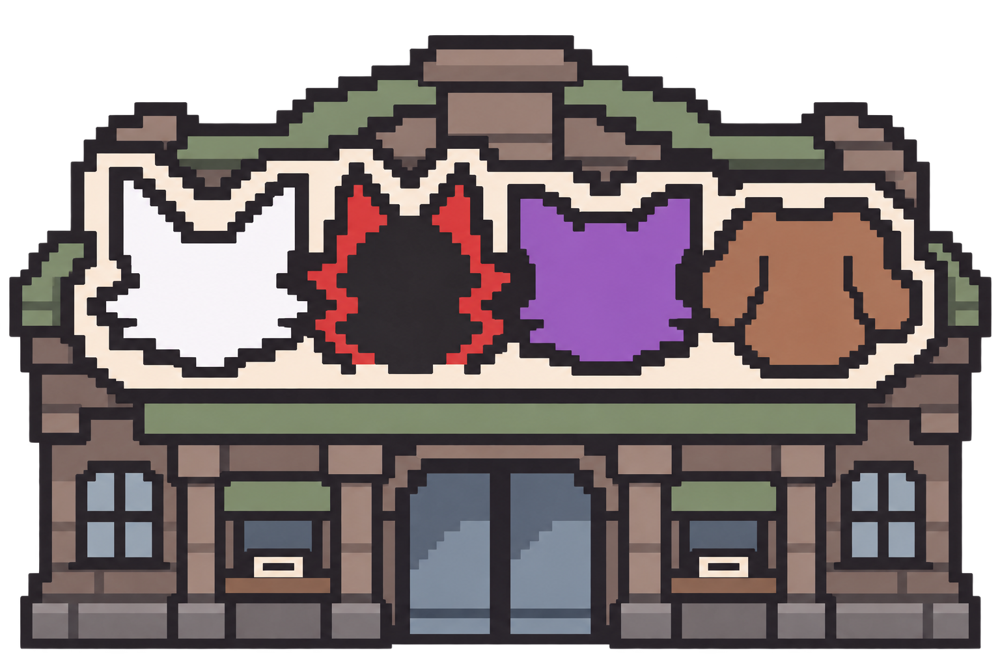
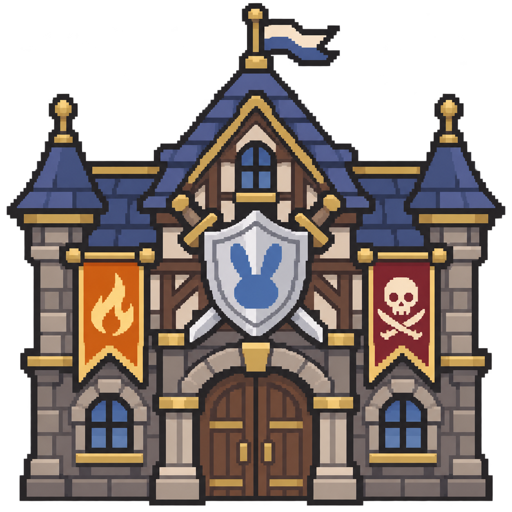
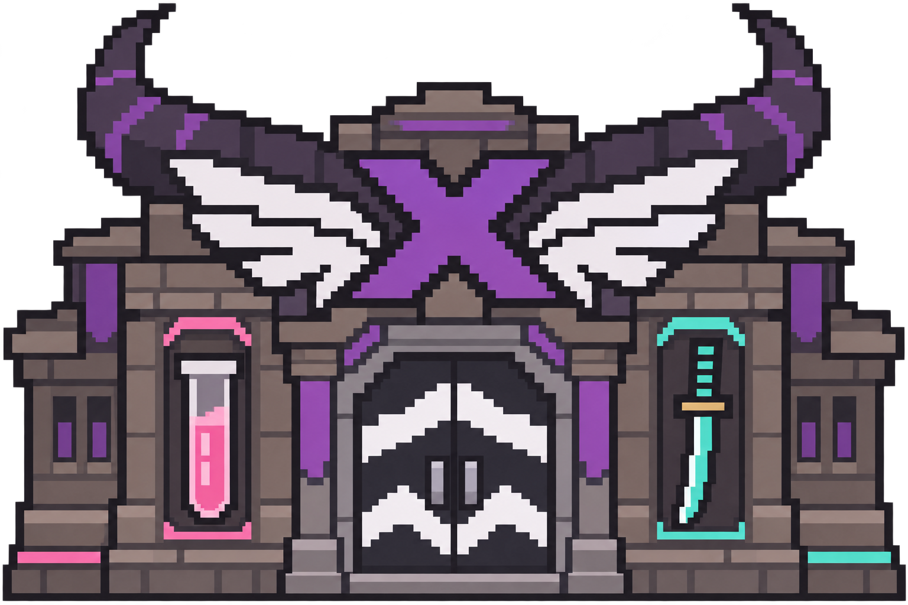
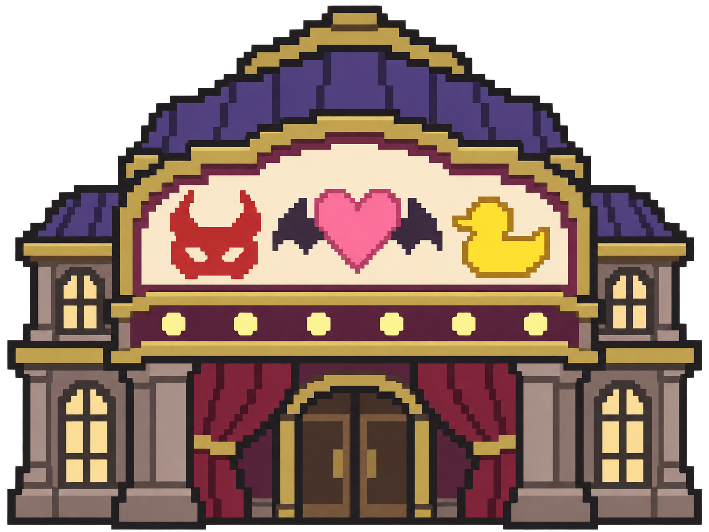
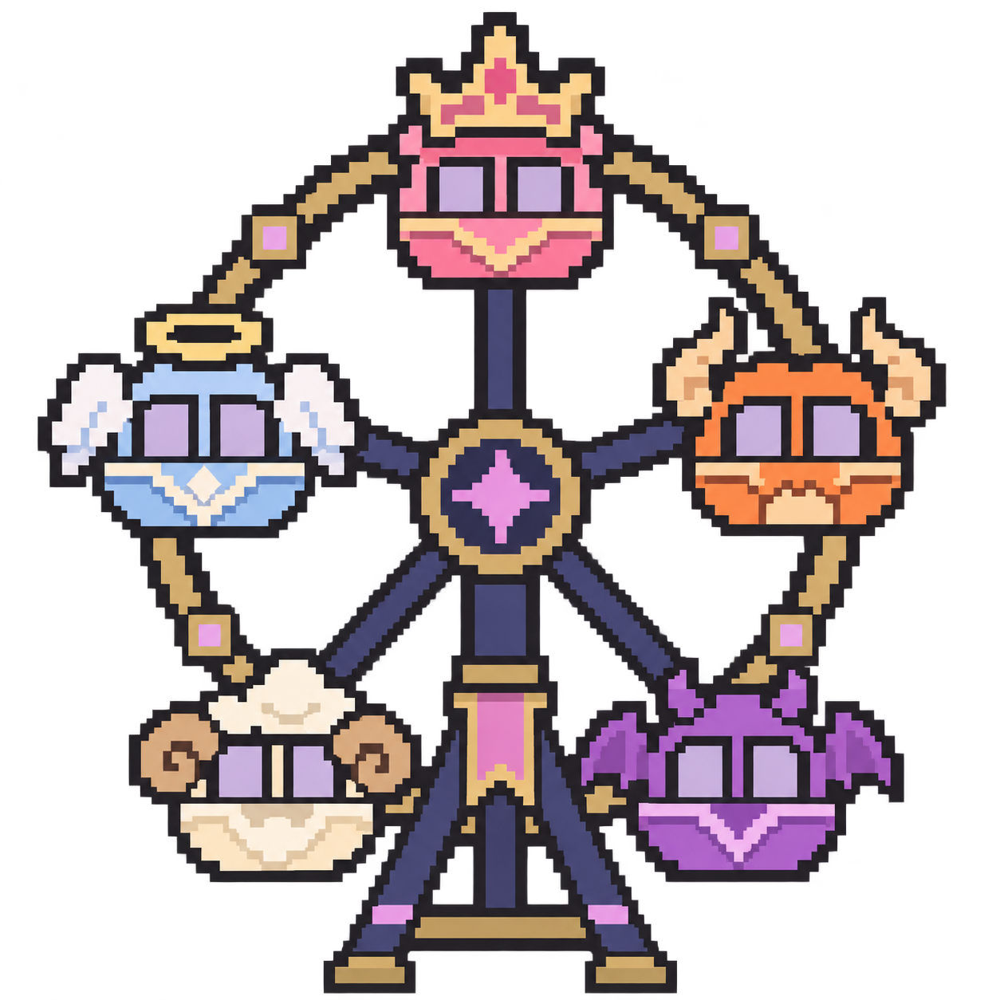
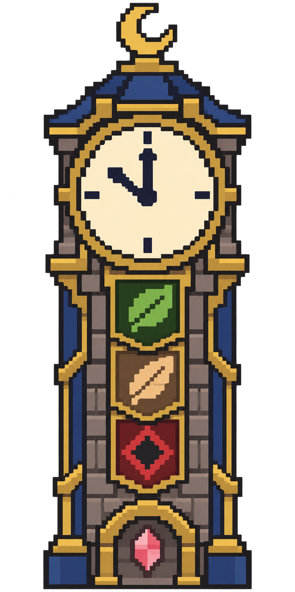

기수별 시설 · 기본 도트6종
노후화 전 디자인 검토용. 원형 시설과 기수 연결은 홀로도리 자료를 참고했고, 외형은 새로 각색했습니다. 3기생 길드 회관은 운동시설 대신 제안하는 독자 각색입니다.
확대본은 정수 배율이며 아래에 원래 크기도 표시합니다. 캐릭터는32×32. 큰 시설은 별도 높이를 쓰며 기존2칸 벽을 뚫어 배치하지 않습니다. 이번 페이지는 개별 시설 비교이며 실제 맵 배치는 아직 적용하지 않았습니다.
게이머즈 역
96×64px · 3×2칸 / 확대3배
원래 크기 · 캐릭터와 비교
원화 보기

3기생 판타지 회관 · 각색
96×96px · 3×3칸 / 확대3배
원래 크기 · 캐릭터와 비교
원화 보기

holoX 아지트
96×64px · 3×2칸 / 확대3배
원래 크기 · 캐릭터와 비교
원화 보기

2기생 극장
128×96px · 4×3칸 / 확대2배
원래 크기 · 캐릭터와 비교
원화 보기

4기생 기적의 고리 · 관람차
128×128px · 4×4칸 / 확대2배
원래 크기 · 캐릭터와 비교
원화 보기

Promise 시계탑
64×128px · 2×4칸 / 확대2배
원래 크기 · 캐릭터와 비교
원화 보기

홀로도리 시설·관련 기수 참고 목록 · 생성·도트 기록